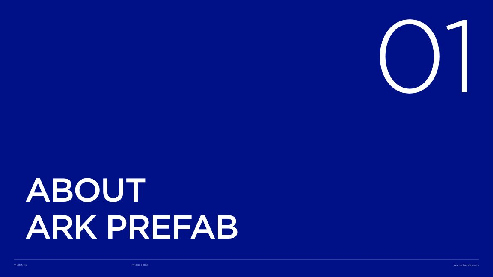

01 / SECTION03CORE SERVICES
THE DOCUMENT STANDARD
2026.09문서의 기준,
하나의 시스템.
52쪽의 레퍼런스를, 다음 제안서의 언어로.
원본 소스부터 레이아웃, 새로운 아이콘을 위한 프롬프트까지.
52pages
분석한 원본 페이지
—
중복 제거한 이미지
—
분리한 그래픽 소스
10layouts
편집 가능한 슬라이드
PRECISION IN EVERY PAGEBuilt from the source.
Built from the source.
Ready for your next story.
형태는 일관되게.
내용은 자유롭게.
ARK / DOCUMENT SYSTEM1920 × 1080
SOURCE REFERENCE 04 / 52

ORIGINAL PDF
시스템을 사용하는 세 가지 방법
YOUR NEXT STEP01 / EXTRACT
필요한 소스를 찾고 ↗
이미지, 원본 벡터, 아이콘을
출처와 함께 확인하고 다운로드하세요.
문서의 구조를 고르고 ↗
표지부터 사례, 비교표까지.
내용만 바꿔 사용할 수 있는 문서 구조.
→
같은 톤으로 확장하세요 ↗
집 아이콘이 금괴 아이콘이 되어도,
시각적 언어는 그대로 유지합니다.
HOW WE BUILT THIS
원본의 관찰값과 시스템의 제안값을 구분합니다. 원본 추출은 PDF에서 보존한 소스, 재구성은 레이아웃을 정리한 템플릿, 확장 예시는 같은 규칙으로 새로 만든 디자인입니다.
01 / FOUNDATION
반복되는 규칙을,
명확한 기준으로.
색, 글자, 여백과 그래픽. 원본에서 관찰한 값과 실무 적용 규칙.
01. 색상
소스 속 실제 RGB 값블루는 장 구분과 큰 면에, 네이비는 텍스트와 아이콘에 사용합니다. 옐로는 원본 캐릭터의 보조색입니다. 모든 강조 요소에 적용하는 기본색으로 확대하지 않습니다.
02. 타이포그래피
ORIGINAL → PRACTICALOBSERVED IN PDF
GothamAa
Book · Medium · Light
일부 Bold · Black · Thin
KOREAN DOCUMENT EXTENSION
명확하게,
여유 있게.
여유 있게.
시스템 산세리프 · 맑은 고딕 / Noto Sans CJK KR
이 페이지와 새 템플릿의 대체 서체입니다. 라이선스가 있는 Gotham을 사용하면 영문 원본에 더 가까워집니다.CHAPTER01
400 units / LightTITLEA clear direction.
85 units / MediumBODY한 페이지에 하나의 메시지.
정보는 정렬하고, 여백은 남깁니다.
정보는 정렬하고, 여백은 남깁니다.
25 units / BookCAPTIONSOURCE · REFERENCE · PAGE
16 units / Light03. 그리드와 여백
1920 × 1080 / 16:9ONE PAGE.
ONE MESSAGE.0148–60 / SOURCE MARGIN 16:9
ONE MESSAGE.0148–60 / SOURCE MARGIN 16:9
넓은 캔버스, 엄격한 정렬.
왼쪽 제목과 오른쪽 정보, 하단의 얇은 페이지 레일이 원본의 주요 골격입니다. 12열 그리드는 이 구조를 재사용하기 위한 시스템 제안입니다.
81624324864
PDF 좌표 단위와 PowerPoint의 pt는 다릅니다. 내보내는 슬라이드 크기에 맞춰 비례 환산합니다.04. 그래픽 계열
계열별 프롬프트 ↗02 / ASSET LIBRARY
원본에서 꺼낸,
다음 작업의 재료.
원본 이미지와 그래픽, 새로 구성한 아이콘을 한곳에서 탐색하세요.
소스를 선택하면 상세 정보와 다운로드가 열립니다.
일치하는 소스가 없습니다.
검색어를 줄이거나 ‘전체’ 유형을 선택해 주세요.
03 / DOCUMENT TEMPLATES
내용에 맞는 구조.
흔들리지 않는 인상.
원본의 정보 구조를 재해석한 편집 가능한 템플릿입니다.
04 / COMPOSITION KIT
작은 단위부터,
완성된 페이지까지.
제목, 숫자, 표, 프로세스를 반복 가능한 문서 구성 요소로 정리했습니다.
02 / KEY METRIC68%
예시 지표 · 프로젝트 효율 개선
03 / COMPARISON TABLE
| 구분 | ESSENTIAL | STANDARD | PREMIUM |
|---|---|---|---|
| 제안 구성 | 기본 패키지 | 맞춤 패키지 | 통합 패키지 |
| 제공 문서 | 소개서 | 소개서 · 제안서 | 전체 문서 시스템 |
| 검토 회차 | 1회 | 2회 | 3회 |
04 / WORKFLOW
01요구사항 정의목표와 조건을 합의합니다.
02설계 및 제안구체적인 해결안을 만듭니다.
03제작 및 검토품질 기준을 확인합니다.
04전달 및 지원실제 사용까지 연결합니다.
위 컴포넌트는 PDF의 구조를 바탕으로 재구성한 예시입니다. 컴포넌트 시트의 HTML/CSS와 템플릿 SVG에서 직접 재사용할 수 있습니다.
05 / PROMPT STUDIO
소재는 달라도,
같은 디자인 언어.
스타일은 고정하고 주제만 바꾸는 프롬프트 조합기.
이미지 생성 도구나 코드 도구에 참고 소스와 함께 전달하세요.
02 / PRESERVE THE STYLEOUTLINE FAMILY
REFERENCE LANGUAGE집 · 규칙 재구성
→NEW SUBJECT EXAMPLE금괴 · 확장 예시
바로 사용할 프롬프트
참고 소스를 함께 첨부하면 일관성이 높아집니다.전체 가이드 ↓
확장 예시 라이브러리
NEW SUBJECT / SAME RULESKEEP / 고정할 것
선 굵기 · 여백 · 시점 · 색상
정해진 캔버스 안에서 비슷한 시각적 무게를 유지합니다. 동일 계열의 참고 소스 2–3개를 함께 사용하세요.
AVOID / 피할 것
금괴라고 금색 3D로 바꾸지 않기
소재의 실제 재질이 스타일을 결정하지 않습니다. 선형 집 옆의 금괴도 같은 블루 선형으로 표현합니다.
06 / SOURCE ATLAS
모든 결정의 출처.
52쪽의 원본 아틀라스.
페이지별 미리보기, 보존용 SVG, 텍스트와 도형 좌표를 확인하세요.
SVG는 원본의 외형을 보존하기 위해 텍스트를 윤곽선으로 변환합니다. 편집 가능한 텍스트와 글꼴·좌표 정보는 각 페이지의 JSON에 별도로 보관했습니다. PDF에 없는 편집 그룹이나 원본 Keynote 구조는 복원되지 않습니다.
07 / TAKE THE SYSTEM WITH YOU
바로 가져가서,
다음 문서를 시작하세요.
실제 소스 파일과 재사용 자료. 별도 빌드나 계정 없이 사용할 수 있습니다.
THE COMPLETE KITARK Document
↓ARK Document
Design System
원본 추출 + 토큰 + 템플릿 + 아이콘 + 프롬프트 + 로컬 라이브러리
추천 작업 순서
- 01
레이아웃을 선택합니다.
슬라이드는 PPTX 또는 SVG, 상세 문서는 A4 HTML로 시작하세요.
- 02
원본 소스를 배치합니다.
해상도와 출처 페이지를 확인하고, 회사명·지표·문구는 목적에 맞게 바꾸세요.
- 03
필요한 소재를 확장합니다.
프롬프트에 같은 계열의 참고 소스를 첨부하고, 결과를 가이드의 기준으로 검수하세요.
보존 범위
PDF에 저장된 이미지, 폰트 서브셋, 페이지 벡터, 텍스트와 도형 정보를 보존합니다.
추출 폰트는 완전한 설치용 글꼴이 아닙니다. 로고와 제3자 이미지는 출처 자산으로 분류되며, 별도의 사용권을 새로 부여하지 않습니다.